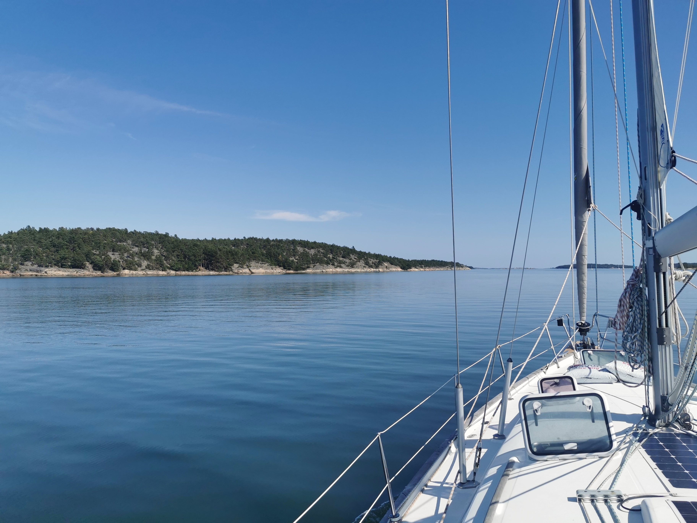

Retket
Miehistön suosikiksi on muodostunut Turun saaristo, joka tarjoaa parhaat puitteet veneilyyn. Turun saariston ulkopuolellekkin on myös lähdetty Ahvenanmaalle ja Tukholmaan.
S/Y Amandan kotisatama on Taalintehtaalla Kemiönsaaressa, DB-Marinan satamassa. Taalintehtaalta on hyvä lähteä seilaamaan Turun saariston monia eri saaria ja vierassatamia kohti. Vierassatamat toimivat useissa saarissa yksityisten yrittäjien ylläpitäminä satamina, joihin veneilijät pääsevät laituroimaan yöksi ja viettämään aikaa satamassa ja sen tarjoamissa palveluissa.
Hyödyllisiä työkaluja retkien suunnitteluun
-Voit seurata tulevaa säätä puhelimelta ja tarkistaa tuulen suuntaa, sekä voimakkuuksia karttapohjalta
-Puhelinsovellus, joka tuo Suomen merikartat puhelimeesi
-Palvelu, josta näet kartalta eri vierassatamoiden tietoja niiden palveluista ja saapumis ohjeita satamaan
!HUOM! Mobiili- ja verkkopalvelut ovat vain helpottamassa suunnittelua, lopulliset suunnitelmat, reitit ja matkan seuranta tulisi tehdä perinteisillä karttakirjoilla, sekä veneen omilla navigointi laitteilla sillä vesillä verkkoyhteydet ja mobiiliyhteydet eivät ole taattuja